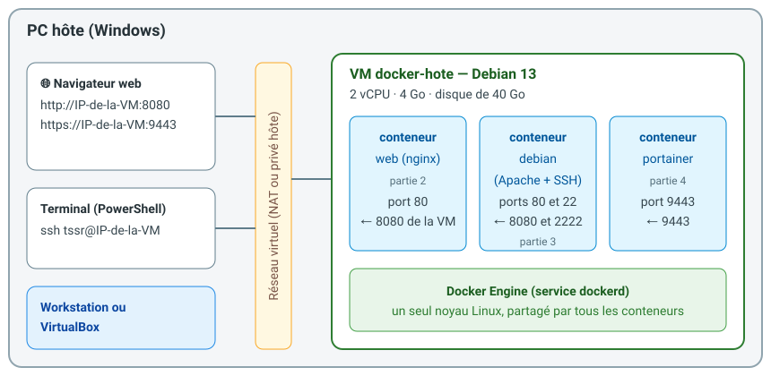

Docker : cours et travaux pratiques en 5 jours¶
Résumé
Ce parcours de cinq jours apprend à déployer et exploiter des services conteneurisés avec Docker, du point de vue d'un administrateur ou d'un technicien systèmes et réseaux : installer Docker proprement, lancer et dépanner des conteneurs, garder leurs données, les brancher sur le réseau, publier plusieurs services derrière un reverse proxy en HTTPS, et les surveiller au quotidien. La théorie arrive au fil des travaux pratiques, au moment où elle sert.
Tout se passe dans une machine virtuelle Debian 13 créée avec VMware Workstation Pro ou VirtualBox. On y manipule aussi des outils qui simplifient la vie : Portainer (interface web), LazyDocker (interface en mode texte), Nginx Proxy Manager, des plateformes « tout-en-un » comme Coolify, et une série de projets amusants à déployer soi-même. Le dernier jour, on construit ses propres images avec un Dockerfile, on les range dans un registre, et on les déploie sur un cluster Docker Swarm de trois VM, capable de survivre à la panne d'une machine.
Cette page rassemble ce qu'il faut garder sous la main pendant tout le parcours : le plan, le schéma du lab, les comptes et mots de passe, le dimensionnement des machines virtuelles et les instantanés conseillés.
| Propriété | Valeur |
|---|---|
| Public | Techniciens et administrateurs systèmes et réseaux en formation : savoir créer une VM Linux et taper quelques commandes suffit |
| Durée totale | 5 jours de 7 h (35 h), dont environ 32 h de parties ; le reste sert aux questions, aux révisions et aux QCM des annexes |
| Version décrite | Debian 13.7 « trixie », Docker Engine 29.10 (et son mode Swarm), Docker Compose 5.8, Portainer CE 2.45 LTS, registre registry:3 |
| Dernière mise à jour | 2026-11-24 |
Objectifs du parcours¶
À la fin du parcours, il est possible de :
- expliquer simplement ce qu'est un conteneur, ce qui le distingue d'une machine virtuelle, et quand choisir l'un ou l'autre ;
- installer Docker sur Debian depuis le dépôt officiel, à la main ou avec un script, et en mesurer les enjeux de sécurité ;
- lancer, arrêter, inspecter et dépanner des conteneurs en ligne de commande, et avec des interfaces comme Portainer et LazyDocker ;
- garder les données d'un conteneur grâce aux volumes, et les sauvegarder ;
- choisir et configurer un réseau Docker, publier un port, isoler des services ;
- décrire une application complète dans un fichier Docker Compose et la déployer en une commande ;
- publier plusieurs services sur un même serveur derrière un reverse proxy, en HTTPS ;
- exploiter une plateforme Docker au quotidien : mises à jour, journaux, limites de ressources, nettoyage, sécurité ;
- construire ses propres images avec un Dockerfile, les distribuer par un registre, et répartir des services sur un cluster Swarm.
Plan du parcours¶
Chaque partie dure entre 1 h et 2 h 30 et mêle explications et pratique. Les durées sont indicatives.
Jour 1 — Installer Docker et lancer ses premiers conteneurs¶
| Partie | Type | Durée | Contenu | Machines allumées |
|---|---|---|---|---|
| 1. Découvrir Docker et l'installer | Cours et TP | 2 h | Conteneur ou VM, création de la VM docker-hote, installation depuis le dépôt officiel, groupe docker, script d'installation |
docker-hote |
| 2. Premiers conteneurs | Cours et TP | 2 h | Images et conteneurs, docker run, publication de port, cycle de vie, journaux, exec, couches, nettoyage |
docker-hote |
| 3. Un serveur web et SSH dans un conteneur Debian | TP | 1 h 30 | Conteneur Debian « à la main », Apache, SSH, ce qui se passe au redémarrage, pourquoi on ne fait pas ça en production | docker-hote |
| 4. Gérer Docker avec Portainer et LazyDocker | TP | 1 h 30 | Interface web Portainer, interface texte LazyDocker, Docker Desktop, le danger du socket Docker | docker-hote |
Jour 2 — Données, réseaux et Docker Compose¶
| Partie | Type | Durée | Contenu | Machines allumées |
|---|---|---|---|---|
| 5. Garder ses données : volumes et dossiers montés | Cours et TP | 2 h | Couche du conteneur, volumes, bind mounts, sauvegarde et restauration d'un volume | docker-hote |
| 6. Sauvegarder un conteneur sous forme d'image | TP | 1 h | docker commit, docker save, docker load, et leurs limites |
docker-hote |
| 7. Les réseaux Docker | Cours et TP | 2 h | Bridge par défaut et personnalisé, résolution de noms, host, none, macvlan, Docker et le pare-feu | docker-hote |
| 8. Docker Compose : Nextcloud en une commande | Cours et TP | 2 h | Fichier Compose (docker-compose.yml), services, volumes, réseaux, variables, journaux |
docker-hote |
Jour 3 — Publier des services¶
| Partie | Type | Durée | Contenu | Machines allumées |
|---|---|---|---|---|
| 9. Un reverse proxy avec Nginx Proxy Manager | Cours et TP | 2 h | Fichier hosts, hôtes de proxy, réseaux Docker partagés, Portainer derrière le proxy |
docker-hote |
| 10. Nextcloud en HTTPS derrière le reverse proxy | TP | 2 h | Compose et proxy, certificat autosigné, WordPress en exercice | docker-hote |
| 11. Les plateformes tout-en-un | Cours et TP | 2 h 30 | Coolify, Cosmos Server, BunkerWeb | docker-hote, docker-plateforme |
Jour 4 — Exploiter et s'amuser¶
| Partie | Type | Durée | Contenu | Machines allumées |
|---|---|---|---|---|
| 12. Exploiter Docker au quotidien | Cours et TP | 2 h | Mises à jour d'images, journaux, limites de ressources, nettoyage, sécurité, analyse avec Trivy | docker-hote |
| 13. Des projets sympas à déployer | TP au choix | 2 h 30 | Uptime Kuma, Kasm, rétrogaming, Open WebUI, Presenton, Windows dans un conteneur, agent Hermes | docker-hote |
Jour 5 — Construire, distribuer, orchestrer¶
| Partie | Type | Durée | Contenu | Machines allumées |
|---|---|---|---|---|
| 14. Construire ses images avec un Dockerfile | Cours et TP | 2 h | Instructions, construction et cache, TP serveur SSH, pile LAMP avec WordPress | docker-hote |
| 15. Distribuer ses images : Docker Hub et registre privé | Cours et TP | 1 h 30 | Nom d'une image, jeton d'accès, tag, push, registre privé, registre en HTTP |
docker-hote |
| 16. Un cluster Docker Swarm | Cours et TP | 2 h 30 | Trois nœuds, service répliqué, maillage de routage, panne d'un nœud, réseau overlay, mise à jour progressive, pile | docker-hote, docker-n2, docker-n3 |
| 17. Défi final | Projet | 1 h | Un intranet à construire, dépanner, déployer sur le cluster et publier derrière le proxy, sans pas-à-pas | docker-hote, docker-n2, docker-n3 |
Les annexes rassemblent un aide-mémoire des commandes, un guide de dépannage, un glossaire et deux QCM.
Suivre l'ordre
Chaque TP s'appuie sur le précédent : la VM docker-hote créée en partie 1 sert pendant tout le parcours. Les explications sont placées juste avant la manipulation qui en a besoin : il n'y a pas de gros chapitre théorique à lire d'abord.
Schéma du lab¶

Le lab du jour 1 : une seule VM Debian, qui héberge tous les conteneurs. Ceux des parties 2 et 3 utilisent tous deux le port 8080 : ils ne tournent jamais en même temps.
Le PC ne joint jamais un conteneur directement : il joint un port de la VM, que Docker redirige vers le bon conteneur. C'est la publication de port, expliquée en partie 2.
Au jour 5, deux petites VM, docker-n2 et docker-n3, rejoignent docker-hote pour former un cluster Swarm :

Le lab du jour 5 (parties 16 et 17) : un manager, deux workers, et le maillage de routage
Plan d'adressage¶
La VM docker-hote reçoit son adresse automatiquement (DHCP). Elle change d'un PC à l'autre : la noter dès la fin de son installation (commande ip -br a), elle sert pendant tout le parcours. Dans les pages du parcours, elle est écrite IP-de-la-VM.
| Élément | Adresse | Remarque |
|---|---|---|
| Réseau VMnet8 (NAT) | 192.168.x.0/24 |
Le troisième octet x est tiré au hasard à l'installation de Workstation |
| Passerelle NAT de Workstation | 192.168.x.2 |
Fait sortir la VM sur Internet |
| PC hôte (carte VMnet8) | 192.168.x.1 |
Permet au PC de joindre la VM |
VM docker-hote |
entre 192.168.x.128 et 192.168.x.254 |
Distribuée par le DHCP de Workstation |
La VM a deux cartes réseau : la première, en mode NAT, lui donne accès à Internet ; la seconde, en mode Réseau privé hôte, permet au PC de la joindre. En mode NAT seul, le PC ne peut pas joindre la VM sans règles de redirection.
| Élément | Adresse | Remarque |
|---|---|---|
| Carte 1 de la VM (NAT) | 10.0.2.15 |
Toujours la même ; sert seulement à sortir sur Internet |
| Réseau privé hôte | 192.168.56.0/24 |
Réseau par défaut de VirtualBox |
| PC hôte (carte VirtualBox Host-Only Ethernet Adapter) | 192.168.56.1 |
Permet au PC de joindre la VM |
| Serveur DHCP du réseau privé hôte | 192.168.56.100 |
Créé par VirtualBox |
VM docker-hote (carte 2) |
à partir de 192.168.56.101 |
C'est cette adresse qu'on utilise depuis le PC |
La VM docker-plateforme de la partie 11 se branche sur le même réseau que docker-hote (mêmes réglages) et reçoit elle aussi son adresse par DHCP : elle est écrite IP-de-plateforme.
Les VM docker-n2 et docker-n3 du cluster Swarm (partie 16) se branchent elles aussi sur ce réseau. Certaines captures (dès la partie 4) et, à partir de la partie 15, certaines commandes montrent en clair les adresses du lab de référence (un lab sous KVM, dont le réseau est 192.168.8.0/24) : 192.168.8.71 pour docker-hote, 192.168.8.72 pour docker-plateforme, 192.168.8.73 pour docker-n2, 192.168.8.74 pour docker-n3. Chez soi, elles sont dans la plage de son hyperviseur (tableaux ci-dessus) : les remplacer par les siennes.
À l'intérieur de la VM, Docker crée en plus son propre réseau privé pour les conteneurs, 172.17.0.0/16 par défaut : on le découvre en partie 2.
Comptes et mots de passe¶
Ce lab est pédagogique : les mots de passe sont écrits ici volontairement pour que chacun puisse suivre à l'identique. En production, chaque mot de passe serait unique, long et rangé dans un gestionnaire de mots de passe.
| Où | Compte | Mot de passe | Créé en |
|---|---|---|---|
VM docker-hote |
root (administrateur) |
TutoDocker-Lab1! |
Partie 1 |
VM docker-hote |
adminlab (utilisateur, membre des groupes sudo et docker) |
TutoDocker-Lab1! |
Partie 1 |
Conteneur debian (SSH) |
root |
TutoDocker-Lab1! |
Partie 3 |
| Portainer | admin |
TutoDocker-Lab1! |
Partie 4 |
| MariaDB (essais de la partie 5) | root |
TutoDocker-Lab1! |
Partie 5 |
| MariaDB de Nextcloud | root, et nextcloud (base nextcloud) |
TutoDocker-Lab1! |
Partie 8 |
| Nextcloud | admin |
TutoDocker-Lab1! |
Parties 8 et 10 |
| Nginx Proxy Manager | admin@lab.local |
TutoDocker-Lab1! |
Partie 9 |
| Coolify | admin@lab.local |
TutoDocker-Lab1! |
Partie 11 |
| Uptime Kuma | admin |
TutoDocker-Lab1! |
Partie 11 |
| Kasm (Firefox) | kasm_user |
TutoDocker-Lab1! |
Partie 13 |
| Open WebUI | admin@lab.local |
TutoDocker-Lab1! |
Partie 13 |
VM docker-plateforme |
root et adminlab |
TutoDocker-Lab1! |
Partie 11 |
| MariaDB de WordPress | root, et wordpress (base wordpress) |
TutoDocker-Lab1! |
Partie 10 |
Conteneur debian-ssh-container (SSH, port 54321) |
user |
TutoDocker-Lab1! |
Partie 14 |
WordPress de l'image LAMP (base wordpress, puis site) |
wordpress (base), admin (site) |
TutoDocker-Lab1! |
Partie 14 |
| Docker Hub | son propre compte, avec un jeton d'accès | personnel, jamais publié | Partie 15 |
VM docker-n2 et docker-n3 |
root et adminlab |
TutoDocker-Lab1! |
Partie 16 |
Pourquoi un mot de passe aussi long ?
Portainer refuse les mots de passe de moins de 12 caractères. Plutôt que d'avoir un mot de passe différent par logiciel, le lab en utilise un seul, assez long pour être accepté partout. Sur un clavier AZERTY, le ! se tape sans Shift, sur la touche à gauche de la touche Shift de droite.
Dimensionnement des VM¶
Le parcours est prévu pour des PC de 16 Go de mémoire vive et un processeur de 4 cœurs ou plus.
| VM | Confortable | Minimal | Disque |
|---|---|---|---|
docker-hote (Debian 13 sans interface graphique) |
2 vCPU, 4 Go | 1 vCPU, 2 Go | 40 Go, dynamique |
docker-plateforme (partie 11) |
2 vCPU, 4 Go | 2 vCPU, 2 Go (minimum indiqué par Coolify) | 40 Go, dynamique |
docker-n2 et docker-n3 (partie 16) |
1 vCPU, 1 Go | 1 vCPU, 1 Go | 20 Go, dynamique |
- Une Debian sans bureau occupe environ 2 Go de disque. Les images Docker prennent vite de la place (de quelques Mo à plusieurs Go chacune) : 40 Go en disque dynamique (qui ne grossit qu'au fur et à mesure) évitent d'être à l'étroit sans occuper 40 Go tout de suite sur le PC.
- Les besoins des jours suivants (plateformes, projets gourmands, cluster Swarm) sont indiqués au début de chaque partie.
Instantanés conseillés¶
Un instantané (snapshot) fige l'état d'une machine virtuelle. En cas d'erreur, on y revient en quelques secondes au lieu de tout recommencer. Les prendre aux étapes marquées 🛟 :
| Instantané | Machine | Moment | Permet de recommencer |
|---|---|---|---|
00-debian-installee |
docker-hote |
Partie 1, juste après l'installation de Debian, VM éteinte | L'installation de Docker |
01-docker-installe |
docker-hote |
Fin de la partie 1, VM éteinte | Toutes les parties suivantes avec un Docker propre |
02-fin-jour-1 |
docker-hote |
Fin de la partie 4, VM éteinte : Docker, Portainer (compte admin créé) et LazyDocker |
Le jour 2 |
03-fin-jour-2 |
docker-hote |
Fin de la partie 8, VM éteinte, Nextcloud arrêté (docker compose down) mais ses volumes gardés |
Le jour 3 |
04-fin-jour-3 |
docker-hote |
Fin de la partie 10, VM éteinte : NPM, Portainer et Nextcloud derrière le proxy en HTTPS (et WordPress si l'exercice a été fait) | La partie 11 et le jour 4 |
05-exploitation |
docker-hote |
Fin de la partie 12, VM éteinte : rotation des journaux réglée | La partie 13 |
00-debian-installee, 01-coolify |
docker-plateforme |
Partie 11 : avant, puis après l'installation de Coolify et d'Uptime Kuma | L'installation de Coolify |
06-registre |
docker-hote |
Fin de la partie 15, VM éteinte : images web et debian-ssh, registre privé, insecure-registries |
La partie 16 |
00-debian-installee |
docker-n2, docker-n3 |
Partie 16, juste après l'installation de Debian | L'installation de Docker |
07-swarm |
docker-hote, docker-n2, docker-n3 |
Fin de la partie 16, les trois VM éteintes : cluster et service bonjour |
Le défi final |
Un instantané n'est pas une sauvegarde
L'instantané reste dans le dossier de la VM, sur le même disque que la machine virtuelle, et il dépend du disque d'origine : si le disque du PC tombe en panne, ou si le dossier de la VM est supprimé, les instantanés disparaissent avec lui.
Logiciels à télécharger¶
| Logiciel | Où le trouver | Remarque |
|---|---|---|
| VMware Workstation Pro pour Windows | Portail de support Broadcom | Gratuit, mais compte Broadcom obligatoire ; procédure dans le parcours Virtualisation |
| Oracle VirtualBox 7.2 | virtualbox.org | Gratuit, sans compte |
| Debian 13 (image netinst amd64, environ 800 Mo) | debian.org | Image d'installation par le réseau : il faut un accès à Internet pendant l'installation |
| Docker Engine, Portainer, LazyDocker | Installés depuis la VM pendant les TP | Rien à télécharger sur le PC |
| Compte Docker Hub | hub.docker.com | Gratuit, compte requis ; facultatif : la partie 15 se fait aussi entièrement avec le registre privé du lab |
Convention de lecture¶
Dans les TP, chaque action précise où elle se fait :
| Repère | Où |
|---|---|
| 🖥️ | PC hôte : Windows, la fenêtre de l'hyperviseur, PowerShell |
| 🐧 | Dans la VM docker-hote (console de la VM, ou session SSH ouverte depuis le PC) |
| 📦 | Dans un conteneur (après docker exec -it … bash ou une connexion SSH au conteneur) |
| 🌐 | Navigateur web du PC hôte |
| ✍️ | Exercice à faire seul, corrigé replié en dessous |
| 1️⃣ 2️⃣ 3️⃣ | Parties 16 et 17 : dans la VM docker-hote (le manager), docker-n2 ou docker-n3 |
| 🛟 | Prendre un instantané |
Les commandes à taper sont dans des blocs de code ; le texte après # est un commentaire, il ne se tape pas. Les interfaces qui n'existent qu'en anglais (Portainer, Coolify…) ont leurs menus écrits en gras, en anglais, avec une traduction entre parenthèses.
Travailler en SSH depuis le PC
La console de l'hyperviseur ne permet pas toujours le copier-coller. Mieux vaut ouvrir PowerShell sur le PC et se connecter à la VM en SSH : ssh adminlab@IP-de-la-VM. Le copier-coller fonctionne alors normalement (clic droit pour coller dans le terminal Windows).
S'entraîner en ligne
Le bac à sable en ligne historique de Docker, Play with Docker, a fermé le 1er mars 2026. Pour réviser hors du lab, des plateformes comme Killercoda ou iximiuz Labs proposent des terminaux Docker dans le navigateur (compte gratuit requis). Elles ne sont pas nécessaires pour suivre le parcours.
Ressources¶
- Documentation officielle de Docker — la référence, en anglais.
- Installer Docker Engine sur Debian — la procédure suivie en partie 1.
- Parcours Virtualisation — pour revoir la création d'une VM Debian et le fonctionnement des réseaux virtuels.